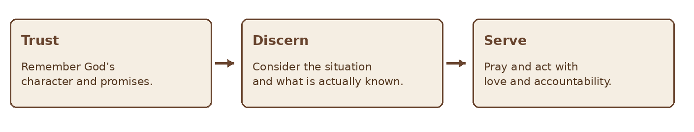
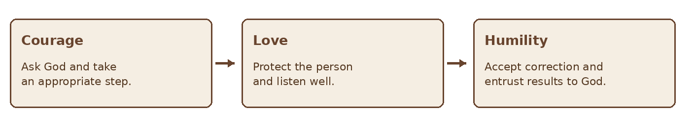
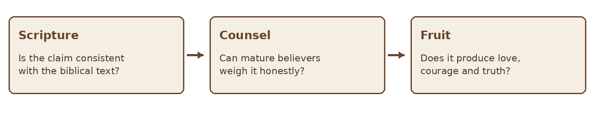

GIFTS OF THE HOLY SPIRIT · BIBLE STUDY
The Gift of Faith
A Bible study on trust in God, Spirit given confidence, and service
STUDY THREE • FAITH
“To another faith by the same Spirit.” — 1 Corinthians 12:9
Paul lists faith among the Spirit’s manifestations for the common good. This study distinguishes that gift from the trust in Christ shared by all believers, explores what the passage does and does not explain, and offers a responsible way to pray and act when someone senses unusual confidence in God. The focus remains on God’s faithfulness and service to others.
Scripture at a Glance
| Passage | Contribution to the study |
|---|---|
| 1 Corinthians 12:4–11 | The Spirit distributes manifestations for the common good; verse 9 names faith. |
| 1 Corinthians 13:1–3 | Even faith associated with moving mountains is nothing without love. |
| Mark 9:14–29 | A father brings both belief and unbelief to Jesus in a desperate need. |
| Hebrews 11:1–40 | Faith looks to God’s promises; faithful people experience different earthly outcomes. |
| James 1:5–8; 5:13–18 | Believers ask God for wisdom and pray in times of suffering and sickness. |
| 2 Corinthians 5:7; Romans 10:17 | The Christian life is marked by faith nourished by hearing the message of Christ. |
1 What Is the Gift of Faith
In 1 Corinthians 12:9 Paul says that faith is given “by the same Spirit.” He does not provide a formal definition or specify how this manifestation differs in every case from the faith of ordinary Christian life. Many Christians understand it as a particular Spirit given confidence in God for a situation, enabling persistent prayer, courage, or action that strengthens others. That description is a possible interpretation of the gift in context, not an explicit definition supplied by Paul.
All believers are called to trust Christ. The gift named among varied manifestations need not imply that those without this particular gift have no genuine faith. Paul’s emphasis is the Spirit’s distribution and the good of the whole body. A person who experiences unusual confidence should offer it humbly, without treating it as proof that a desired outcome is guaranteed.

Figure 1 Confidence directed toward faithful service
2 Faith Is Directed Toward God
Biblical faith is more than optimism about a preferred result. Hebrews 11 portrays people who trusted God and obeyed amid uncertainty. Some saw deliverance; others endured suffering and died without receiving what they hoped for in this life. Their differing circumstances do not divide them into the faithful and the faithless.
The object of faith matters. Confidence in God’s goodness and power is not the same claim as certainty that God has promised a specific event at a specific time. When Scripture gives a promise, read its context before applying it. When the outcome is not revealed, pray boldly while leaving room for God’s wisdom.
| Statement | What it expresses |
|---|---|
| “God is able.” | Trust in God’s power. |
| “I will keep praying and serving.” | A faithful response within my responsibility. |
| “This exact outcome will happen.” | A specific prediction requiring stronger grounds and testing. |
3 Faith and Love Belong Together
Paul’s striking example in 1 Corinthians 13:2 says that even faith capable of moving mountains amounts to nothing without love. The point does not belittle faith. It warns that a dramatic claim or extraordinary confidence can be exercised without care for people.
A person expressing faith should listen to those affected, respect their dignity, and avoid making their pain into a demonstration. Prayer offered with faith can be gentle. It does not require blaming someone for a delayed answer or demanding that they publicly agree with a prediction.

Figure 2 The posture of faith in community
4 Faith Does Not Remove Uncertainty
In Mark 9:24 a father turns to Jesus while admitting the weakness mixed with his belief. His words show that a person can seek Jesus honestly without pretending to possess perfect certainty. The passage concerns a particular encounter with Jesus; it should not be made into a formula for ensuring every requested outcome.
Fear or questions may be present even when someone acts faithfully. Courage often means doing what is right while the result remains unknown. Mature faith can pray, seek wise counsel, take ordinary precautions, and continue to care for others.
5 What the Gift May Contribute
In a season of hardship, one believer’s settled confidence may help a group persevere in prayer and obedience. Someone may encourage others to remember God’s character, resist despair, or take a costly
but appropriate step. Such encouragement must be weighed by Scripture and the actual responsibilities of the people involved.
| Possible contribution | Responsible expression |
|---|---|
| Encouragement | “Let us keep praying and supporting them.” |
| Perseverance | Continue a faithful task without assuming success is immediate. |
| Courage | Take a prudent step consistent with Scripture and wise counsel. |
| Hope | Remind others that God remains present even if the outcome differs from expectation. |
Hope Remind others that God remains present even if the outcome differs from expectation. The Spirit’s work may strengthen people through ordinary care as well as remarkable events. Confidence should not be used to dismiss medical treatment, safety needs, financial realities, or the expertise relevant to a decision.
6 Test a Claimed Assurance
When someone says they have special faith for an outcome, ask what they are claiming. Is it a statement about God’s ability, a call to prayer, or a specific prediction? The clearer the distinction, the easier it is to respond wisely. A specific claim should not be imposed on others as though questioning it were disobedience to God.

Figure 3 Testing an assurance without dismissing prayer
If the hoped for event does not happen, tell the truth about the outcome. Do not shift blame onto a suffering person for allegedly lacking faith. Continue practical care, prayer, and companionship. Honest correction can protect the community and deepen trust.
7 A Practical Faith Journal
Use these prompts when you sense strong confidence or when someone asks you to join them in prayer.
| Prompt | Record |
|---|---|
| What am I trusting God for? | State the request and the situation clearly. |
| What has God promised? | Identify the passage and its context, if one applies. |
| What is my interpretation? | Separate a hope or impression from an explicit promise. |
| Who is affected? | Consider consent, dignity, and practical needs. |
| What is faithful today? | Choose prayer, service, wise counsel, and appropriate action. |
| What happened over time? | Record the outcome honestly and continue learning. |
Reflection and Discussion
- How is trust in God different from certainty about my preferred outcome?
- What do the varied experiences in Hebrews 11 teach about faithfulness?
- How can a person offer encouragement without pressuring someone who suffers?
- Where might God be calling me to pray and take a responsible step today?
A Prayer for Faith
Father, strengthen my trust in You. Teach me to pray with hope, act with courage, and care for people with love. If Your Spirit gives me unusual confidence in a difficult moment, help me offer it humbly and test my interpretation honestly. Keep me from making promises You have not made. Let my faith remain rooted in Jesus Christ whatever the outcome. Amen.
Further Study
Read 1 Corinthians 12–14 as one discussion of gifts, love, and the building up of the church. Read Hebrews 11 in full and notice the different outcomes experienced by faithful people. Compare Mark 9:14–29 with James 5:13–18 as you consider prayer, dependence, and care for those in need.